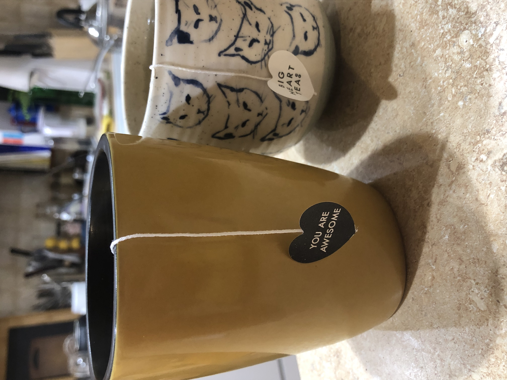

While "true" tea typically refers to black and green teas, there are a wide variety of other teas, including oolong tea and white tea, along with a whole host of tea beverages around the world. As a group, these beverages may not have much in common with each other, but they are all refered to as tea or derived from tea, and so I feel they should be listed here as well.

Show a little love for the tea that warms us.
Oolong tea (between black and green tea in fermentation time)
White tea (the least processed "true" tea)
Pu-erh tea (usually a green tea that is fermented for a long period of time)
Herbal tea (refers to almost any beverage prepared by steeping herbs in water)
Rooibos tea (also referred to as red tea, it has no caffeine but a similar body to black tea)
Chai (the Hindi word for tea, frequently refering to Masala Chai, a spiced, milky Assam tea)
Mate (although unrelated to camellia sinensis, mate also has naturally occuring caffeine)
Blended teas (many popular teas are actually a blend of multiple plants)
Iced tea/sweet tea (distinguished by its presentation, athough usually black tea with sweetener)
Thai tea (very sweet, orange iced tea beverage made with sweetened condensed milk and spices)
Boba tea/bubble tea (milk tea with tapioca pearls, usually cold)
Long Island Iced Tea (most beverages have an alcoholic equivalent, although this is a stretch)
The ritual nature of preparing and drinking tea can be very medatative, even if you use a simple tea bag.
The Oat Milk Matcha Latte
Information provided from my own knowledge, along with excerpts from the "Tea" entry in the encyclpedia Brittanica.